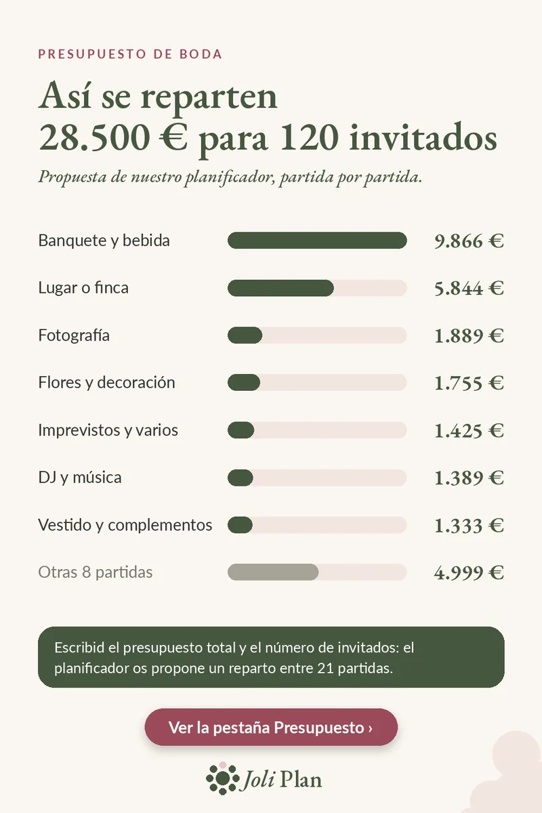

Presupuesto de boda
Presupuesto de boda: cómo repartir 28.500 € para 120 invitados
Actualizado el 25/10/2026
Con 28.500 € y 120 invitados, la pregunta no es «¿llega?», sino «¿adónde va cada euro?». Este es el reparto que propone nuestro planificador, partida por partida. Son cifras orientativas para empezar, no precios reales: ajustadlas con vuestros presupuestos.
Ver el planificador de boda en Etsy ›

El reparto partida por partida
| Partida | Importe |
|---|---|
| Banquete y bebida | 9.866 € |
| Lugar o finca | 5.844 € |
| Fotografía | 1.889 € |
| Flores y decoración | 1.755 € |
| Imprevistos y varios | 1.425 € |
| DJ y música | 1.389 € |
| Vestido y complementos | 1.333 € |
| Resto de partidas | 4.999 € |
Qué conviene recordar
El banquete y el lugar suman 15.710 €: algo más de la mitad del presupuesto. Ahí es donde más se nota un cambio de fecha, de menú o de número de invitados.
Dejad una partida de imprevistos de en torno al 5 %. Absorbe los pequeños olvidos sin tocar el resto.
Cómo adaptar estas cifras a vuestra boda
- Sustituid cada importe por vuestro primer presupuesto en cuanto lo tengáis.
- Si una partida se pasa, quitad la diferencia de otra partida, no de los imprevistos.
- Recalculad cuando cambie el número de invitados: el banquete depende del número de comensales.
- Mantened todas las partidas en una sola página para ver de un vistazo lo que ya está asignado.